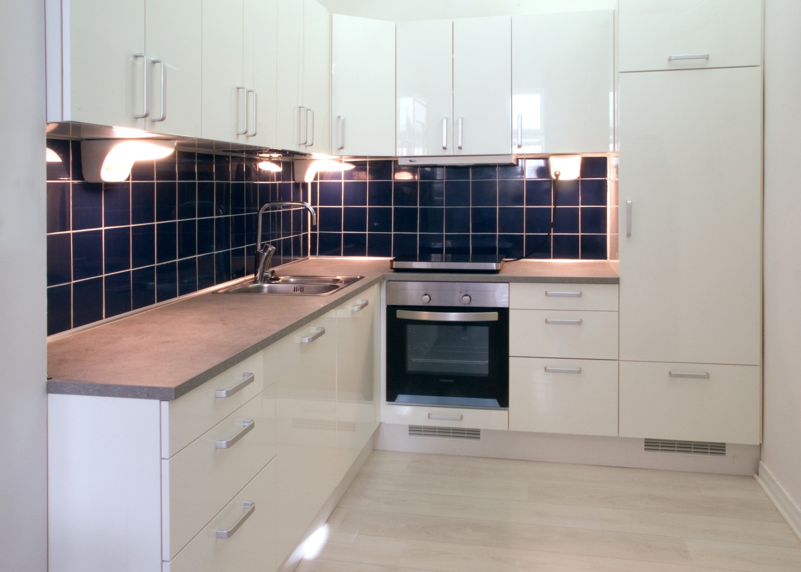
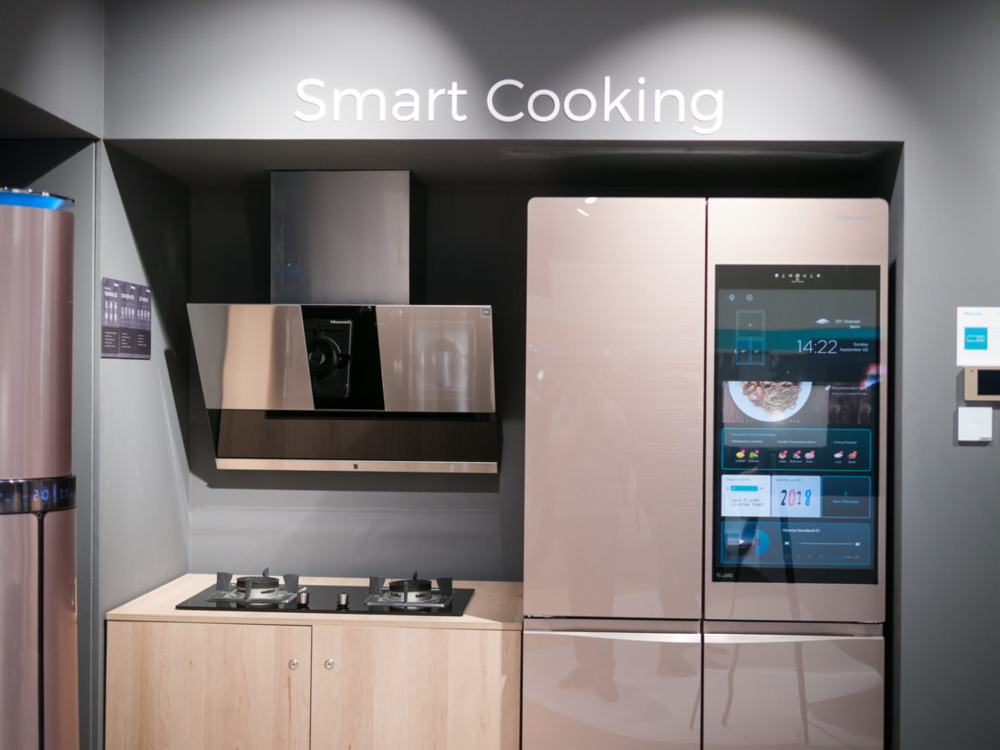

Colour Schemes

A colour scheme is a good place to start for any room. I prefer to keep kitchens very light and airy so colour schemes based around a light blue or green are where I would start. I'd also say don't be scared of having some white as it's nice to have the room light so you can make sure you can see what you're cooking!
Decorations
Some kitchen tiles can be used to add some colour and interest to a kitchen, whilst also being very practical. Tiles can be used for splashback by the sink and oven areas to protect the paint as they are wipe-clean. I like square tiles, either all the same colour or alternating a darker colour with white.
Technology
Although the look of the kitchen is important, you also want to make sure it's functional. There is lots of new technology about that can make your life easier, such as the LG Smart fridge (not sponsored) which connects to bluetooth and wifi!